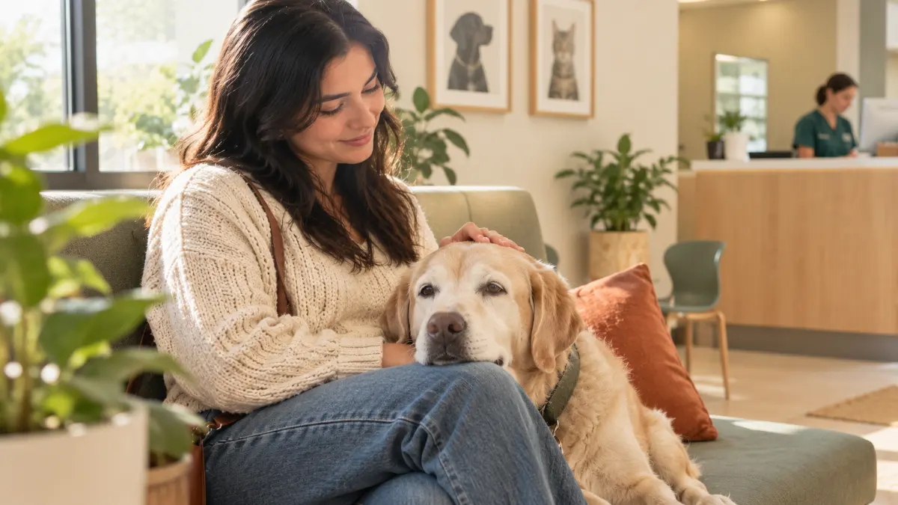

¿Cada cuánto llevar a tu perro o gato al veterinario?

Es una de las preguntas que más nos hacen en recepción, casi siempre con algo de culpa: «¿Debí traerlo antes?». La respuesta corta es que depende de su edad, pero hay una regla que aplica a todos: la mejor visita al veterinario es la que se hace antes de que algo duela. En esta guía te explico cada cuánto conviene una revisión, qué hacemos en ella y qué señales no deben esperar a la próxima cita.
¿Por qué ir aunque se vea sano?
Perros y gatos son expertos en disimular. Es un instinto antiguo: un animal que muestra debilidad se vuelve vulnerable, así que muchos siguen comiendo, jugando y saludando en la puerta aunque algo no ande bien. Cuando por fin notamos el cambio, el problema suele llevar tiempo avanzando.
La consulta preventiva sirve justo para eso: encontrar a tiempo lo que todavía no se ve. Un poco de sarro que mañana será una extracción, unos kilos de más que con los años cargan las articulaciones o un análisis de sangre que empieza a moverse. Detectarlo pronto casi siempre significa tratamientos más sencillos, más baratos y con mejor pronóstico.
Además, cada revisión deja un registro. Cuando tu mascota tiene un médico de cabecera que conoce su historia —en Havenwell es la regla—, cualquier cambio de peso, de apetito o de conducta se compara contra sus propios datos y no contra un promedio.
¿Cada cuánto según su edad?
Como guía general:
- Cachorros y gatitos: cada 3 o 4 semanas hasta completar sus vacunas. En esas visitas también revisamos su crecimiento, la desparasitación y la alimentación.
- Adultos: una revisión completa al año, aunque se vean perfectos.
- Mayores de 7 años: cada 6 meses. A partir de esa edad los cambios llegan más rápido y medio año es mucho tiempo en la vida de un perro o un gato.
A esto se suma la desparasitación interna: cada 15 días hasta los 3 meses de edad y, en adultos, cada 3 meses. Las vacunas se refuerzan una vez al año, según el esquema de cada mascota.
Si tu perro o gato vive con una enfermedad crónica, su veterinario te dará un calendario propio. Ahí las revisiones no son un extra: son parte del tratamiento.
¿Qué revisamos en una consulta preventiva?
En Havenwell la consulta dura 45 minutos. No es para alargar la plática: es el tiempo que se necesita para revisar con calma y explicarte lo que encontramos. Una consulta preventiva incluye:
- Examen físico completo, de la nariz a la cola.
- Peso y condición corporal.
- Revisión de boca, ojos y oídos.
- Plan de vacunas y desparasitación.
- Recomendaciones de alimentación.
- Un resumen por WhatsApp el mismo día.
Si hace falta algún estudio, te explicamos para qué sirve y cuánto cuesta antes de hacerlo. Tenemos laboratorio propio y la mayoría de los resultados están en menos de una hora; un análisis de sangre con hemograma y química cuesta desde $890. Para pacientes mayores existe la consulta geriátrica con análisis básicos, de $1,450.
También exploramos sin sujeción forzada y con premios. Una visita tranquila hace que la siguiente sea más fácil, para tu mascota y para ti.
¿Qué señales no deben esperar a la revisión?
Hay situaciones que no se dejan para la próxima cita. Ven de inmediato si tu mascota:
- Tiene dificultad para respirar.
- Convulsiona.
- Sangra mucho.
- Comió veneno, chocolate, uvas o medicamentos.
- No puede orinar.
- Vomita varias veces seguidas.
- Tiene el abdomen hinchado y duro.
- Sufrió un golpe o un atropello.
En horario —lunes a viernes de 9:00 a 20:00 y sábado de 9:00 a 15:00— atendemos urgencias de inmediato y sin cita; la consulta de urgencia cuesta $900. Fuera de horario, si tu mascota ya es paciente, escríbenos por WhatsApp y te canalizamos a un hospital 24 horas aliado.
Otros cambios no son urgencias, pero sí merecen adelantar la consulta: mal aliento, encías rojas, que tome mucha más agua de lo normal, que baje de peso sin estar a dieta o que deje de usar el arenero.
¿Cómo ayuda el Plan Bienestar?
Si la prevención se complica por el gasto, el Plan Bienestar la convierte en una mensualidad fija: $249 al mes para gatos, $299 para perros de hasta 25 kg y $349 para perros de más de 25 kg. Incluye 2 consultas de bienestar al año, vacunas anuales, desparasitación interna cada 3 meses, 1 consulta de urgencia en horario al año, 20 % en cirugías, estudios y limpieza dental, y mensaje directo con tu veterinario por WhatsApp.
No tiene plazo forzoso: puedes pausarlo hasta 2 meses al año o cancelarlo cuando quieras con un mensaje. Para muchas familias, la ventaja principal no es el ahorro sino la constancia: con el plan, las revisiones dejan de posponerse.
Lo importante es no esperar a que algo duela. Una revisión a tiempo es la consulta más tranquila que vas a tener.